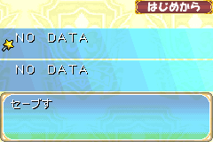

Mahou Sensei Negima! - Private Lesson 2 - Ojamashimasuu Parasite de Chuu (Japan)
Stateless / Passcode 💾 MultiBoot 🎮 4P Link
Cartridge Identity
- Game Code
BNMJ(FamilyBNM)- Header Title
NEGIMAGI2- Maker / Revision
99/ rev0- ROM Size
- 16.0 MiB (16,777,216 B)
- Save Media
None / Unknown- SHA-256
9c3cf5af6210e9311812e7be5da03109b30d6ecf0cdd2a32ca423c0b16844b8e- Engine / SDK Group
comm-001(196 families)
Screenshots

Link Cable & Multiplayer Communications
This title contains detected communication capabilities: 💾 MultiBoot 🎮 4P Link.
Detailed protocol specifications, SIO registers, Joybus commands, and MultiBoot sequences are documented in the Link & Multiplayer Reference.
- Multi-Player SIO (4P)
- 16-bit ring network · SIOCNT (
0x04000128) literals:0x0004a8,0x000570,0x0008f8· SIODATA32/SIOMULTI0 (0x04000120) literals:0x0004b4,0x0009e0,0x000aa8 - Single-Cart MultiBoot
- Single-Cartridge MultiBoot (Download Play) client/server handler · Thumb SWI 0x25 (
0xDF25):0x1df870,0x1e87b0,0x2180b2,0x5fe3fe
Cartridge Storage Architecture: Stateless / Passcode
Zero non-volatile battery hardware: This cartridge PCB contains ROM only (no SRAM, Flash, or EEPROM chips). Progression is preserved via on-screen passcodes or session-only gameplay. No
.sav file is generated or required.
ROM Assets, Compression & Audio
- BIOS Compression
- LZ77 (
0x10): 2 streams · RLE (0x30): 0 streams - ROM Pointer Tables
- 60 tables (0 pointing to validated compressed streams)
- SDK Backup Tags
SRAM_F_V103
Asset Map (formatkit.asset-map.v1)
Download BNMJ-r0-9c3cf5af6210e931.asset-map.json.gz (102,163 B (99.8 KiB)) Verified PASS · 1.05% coverage
| Metric | Bytes / Value | Entries |
|---|---|---|
| Identified | 176,117 B (172.0 KiB) (1.05%) | 1,273 |
| Mapped | 0 B (0.00%) | 0 |
| Opaque | 256 B (0.00%) | 1 |
| Unknown | 16,600,843 B (15.83 MiB) (98.95%) | 1,270 |
| Total ROM Size | 16,777,216 B (16.00 MiB) | 2,544 |
| Coverage % | 1.05% | — |
| Entries w/ Code Refs | 1,282 / 2,544 (50.39%) | — |
Top Identified Formats: gfx.gba-palette (1,267 · 158,144 B (154.4 KiB)) · compress.bios-rle (4 · 16,901 B (16.5 KiB)) · audio.m4a-song-table (1 · 880 B) · gba.rom-header (1 · 192 B)
Largest unknown Extents (Headerless / Custom Asset Candidates)
| Offset | Size | Shannon Entropy | Code Refs |
|---|---|---|---|
0x002966C8 | 14,063,672 B (13.41 MiB) | 3.862 bits/B | 0 |
0x001F93F0 | 258,184 B (252.1 KiB) | 6.687 bits/B | 0 |
0x000C4120 | 253,068 B (247.1 KiB) | 6.821 bits/B | 0 |
0x001143CC | 252,764 B (246.8 KiB) | 6.721 bits/B | 0 |
0x00092010 | 188,900 B (184.5 KiB) | 6.986 bits/B | 0 |
gzip -dk BNMJ-r0-9c3cf5af6210e931.asset-map.json.gz && gbakit map verify rom.gba BNMJ-r0-9c3cf5af6210e931.asset-map.json
gbakit assets export rom.gba --asset-map BNMJ-r0-9c3cf5af6210e931.asset-map.json -o out/Text, Fonts & Scene Data
- Primary Text Encoding
- 16-bit / UTF-16LE text (
2ASCII strings) - Font & VWF Indicators
- VWF Width Table 1bpp Font · BIOS SWIs: BitUnPack
0x10:4· LZ770x11/12:14· Huffman0x13:4· RLE0x14/15:11 - Scene & Packaging
271ROM pointer tables (≥32 entries,25≥200) ·3relativeu32TOCs ·269OAM metasprite hits